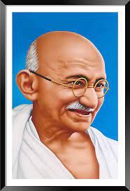

Gandhiji
1869-1948
In a small, white-washed house in Porbandar, on the coast of Kathiawad in western India, Mohandas Gandhi was born on
October 2, 1869. His parents were Karamchand Gandhi and Putlibai.He was small and dark, and looked no different from
the millions of other children born in India. Yet this was no ordinary child. He was to fight and overcome a great
empire and,without taking to arms, set his country free. He was to be called the Mahatma, the Great Soul. Having ed
his people to freedom, he was to lay down his life for their sake.
Porbandar is an old sea-port, overlooked by the distant Barda Hills. Even in ancient days ships from far off lands
went there to trade. It was the ancestral home of the Gandhi's. The grandfather and father of Mohandas were famous
for their ability and for their upright character.
Grandfather Uttamchand Gandhi, who belonged to a humble family of merchants, become the Dewan of Porbandar. He was
succeeded by his son, Karamchand Gandhi popularly known as a Kaba Gandhi. Karamchand had very little formal educa
-tion, but his knowledge and experience made him a good administrator. He was brave and generous. He had, however,
one fault a bad temper.
Putlibai, Karamchand Gandhi's wife, was deeply religious. Every day she worshipped at the temple. She was a lovable
and strong willed woman, widely respected for her wisdom and good sense. People often sought her advice on various
matters.
Mohandas was the youngest of the six children of Kaba Gandhi. He was the favourite child of the family and was
called 'Moniya' by his fond parents and their friends. Moniya adored his mother. He loved his father too, but he
was a little afraid of him.
As a child, Moniya seldom liked to stay at home. He would go home for his meals and then run away again to play out
side If one of his brothers teased him or playfully pulled his ears he would run home to complain to his mother.
At Rajkot he was sent to a primary school. He was shy and did not mix easily with the other children. Every morning
he went to school in time, and ran back home as soon as school was over. His books were his sole companions and he
spent all his free time alone reading.
Mohandas was only thirteen when he was told that he was soon to be married. His parent has already chosen his bride.
She lived in Porbandar and her name was kasturbai. She and Mohandas were about the same age.
The wedding day approached. Mohandas was dressed in new clothes. Everyone was gaily dressed and the house was
decked with flowers and banana leaves. The bridegroom, accompanied by the wedding party, left for Porbandar.
In the Bribe's home it was a day of great celebration. There was singing and dancing and music. At the auspicious hour
the bridegroom and party arrived.
Kasturbai, dressed in red and wearing elegant jewellery, was shy but attractive. Amidst great rejoicing, Mohandas was
married to Kasturbai.
The celebrations lasted a whole week and then the bride left her home in Porbandar and went with her husband to
Rajkot.
Primary Education:
Where was Gandhi educated? He received his primary education in the city of Porbandar. Being a famous and influential
person, some people assume Gandhi was among the brightest students in his school. Contrary to this, Gandhi was an
average student. He was not very good at academics or in any sporting activities, however, he grasped some of the most
important aspects of his education including good morals. He was also a shy and timid student. The school he went to
was a school consisting of boys only and was located on the Western Coast of India
High School Education:
Gandhi later moved to Rajkot, a city located in the western part of India. The move was necessary due to his father's
new job. He joined Alfred High School, an all-boys school, at the age of 11 years. There was a lot of improvement in
his performance in high school compared to elementary school.
The young Gandhi who was not good at anything could now be recognized as a good student in various subjects including
English. He did not excel in other areas such as Geography. He was still the same shy student but he still maintained
the good conduct he had from a very young age. One thing that never changed was his handwriting. It was never pleasing.
This is probably due to the fact that he learned by writing on dust using his fingers.
College Education:
Despite Mahatma Gandhi's education challenges during his high school years including being taken a year back, Gandhi
managed to complete his high school. He enrolled in Samaldas Arts College, the only institution that was offering a
degree. Gandhi later dropped out of college and went back home to his family in Porbandar.
After some time, Gandhi decided to go back to college. He opted to take a different course, Law. Since he had studied
in India all his life, he decided to make a change and study in England. His decision was met with many challenges
starting from his own family. His mother was not supportive of him leaving India and the local chiefs excommunicated
him.
He was born on 2 October, 1869 in Porbandar, Gujarat. His father’s name was Karamchand Gandhi and his mother’s name
was Putlibai. At the age of 13, Mahatma Gandhi was married to Kasturba which is an arranged marriage. They had four
sons namely Harilal, Manilal, Ramdas and Devdas. She supported all the endeavors of her husband until her death in
1944.
His father was Dewan or Chief Minister of Porbandar, the capital of a small principality in Western British India
(Now Gujarat State). Mahatma Gandhi was the son of his father's fourth wife Putlibai, who belonged to an affluent
Vaishnava family. Let us tell you that in his earlier days, he was deeply influenced by the stories of Shravana
and Harishchandra as they reflected the importance of truth.
Death of Mahatma Gandhi:
Mahatma Gandhi's death was a tragic event and brought clouds of sorrow to millions of people. On the 29th of
January, a man named Nathuram Godse came to Delhi with an automatic pistol. About 5 pm in the afternoon of the
next day, he went to the Gardens of Birla house, and suddenly, a man from the crowd came out and bowed before him.
Then Godse fired three bullets at his chest and stomach, who was Mahatma Gandhi. Gandhi was in such a posture that
he to the ground. During his death, he uttered: “Ram! Ram!” Although someone could have called the doctor in this
critical situation during that time, no one thought of that, and Gandhiji died within half an hour.